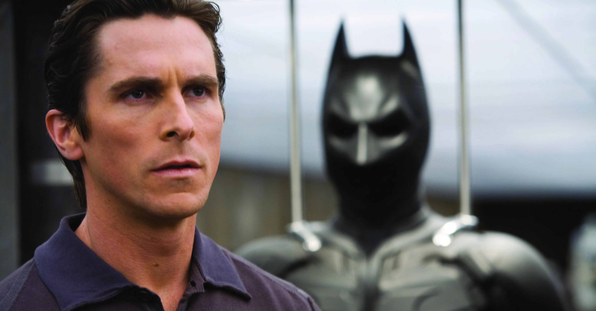

.jpeg) Heath Ledger as The Joker
Heath Ledger as The Joker .jpeg) Aaron Eckhart as Harvey Dent / The Penguin
Aaron Eckhart as Harvey Dent / The Penguin Maggie Gyllenhaal as Rachel Dawes
.jpeg) Gary oldman as James Jordon
Gary oldman as James Jordon Set within a year after the events of Batman Begins (2005), Batman, Lieutenant James Gordon, and new District Attorney Harvey Dent successfully begin to round up the criminals that plague Gotham City, until a mysterious and sadistic criminal mastermind known only as "The Joker" appears in Gotham, creating a new wave of chaos. Batman's struggle against The Joker becomes deeply personal, forcing him to "confront everything he believes" and improve his technology to stop him. A love triangle develops between Bruce Wayne, Dent, and Rachel Dawes.
 Christian Bale as Bruce
Wayne/Batman
Heath Ledger as The Joker
Aaron Eckhart as Harvey Dent / The Penguin
Maggie Gyllenhaal as Rachel
Dawes
Gary oldman as James Jordon